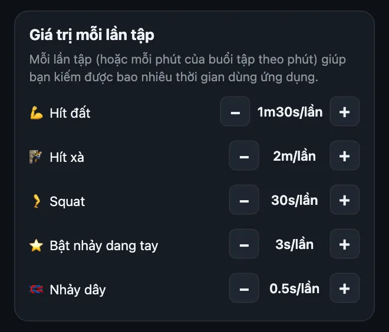

Một cái hít đất nên đổi được bao nhiêu thời gian dùng màn hình?
Chào mọi người! Trong HonorFit, mỗi lần tập bạn ghi lại sẽ mua được thời gian dùng app, và giá là do bạn quyết định. Đó cũng là câu mình hay được hỏi nhất sau khi mọi người thiết lập xong: một cái hít đất nên đáng bao nhiêu? Một phút? Mười giây? Đây là cách mình nghĩ về chuyện này.
Mức mặc định
Nếu bạn không chỉnh gì cả, đây là những gì bạn có:
| Bài tập | Mặc định được |
|---|---|
| 💪 Hít đất | 1 phút mỗi lần |
| 🧗 Hít xà | 1 phút 30 giây mỗi lần |
| 🔥 Gập bụng, 🦵 Squat | 30 giây mỗi lần |
| Bất kỳ bài nào bạn thêm vào | 30 giây mỗi lần |
| Bài tập theo phút (đi bộ, yoga, HIIT) | 30 giây mỗi phút |
| Bài tập theo quãng đường | 5 phút mỗi km, hoặc 8 phút mỗi dặm |
| 👟 Bước chân | 3 phút mỗi 1.000 bước |
Vậy 20 cái hít đất là 20 phút Instagram. Với nhiều người, mức đó vừa đủ để bắt đầu. Với người khác thì lại quá hào phóng hoặc quá keo kiệt. Bạn thuộc nhóm nào?
Cách chọn trong một dòng
Hãy nghĩ tới hai con số:
- Vào một ngày bình thường, bao nhiêu thời gian trong các app bị chặn là bạn thấy ổn? Thành thật nhé, đừng ghi con số mơ ước.
- Bạn thật sự sẽ tập bao nhiêu lần để đổi lấy khoảng đó, rải ra trong cả ngày?
Rồi chia: giá trị mỗi lần = thời gian ÷ số lần. Muốn một tiếng TikTok cho 60 cái hít đất? 1 phút một lần. Muốn vẫn một tiếng đó nhưng bạn làm được 120 cái squat? 30 giây một cái squat. Thật ra chỉ có vậy thôi.
Nếu câu trả lời cho con số thứ hai là “không nhiều lắm”, cũng không sao. Đặt giá mỗi lần cao lên, và dùng Mức cơ bản mỗi ngày (trong Cài đặt, miễn phí) để mỗi ngày bắt đầu với một ít thời gian có sẵn.
Vài thiết lập để bạn chép về dùng
| Bài tập | Mỗi lần được | Một hiệp được bao nhiêu |
|---|---|---|
| Hít đất (mới bắt đầu) | 1 phút 30 giây | 10 cái hít đất = 15 phút |
| Hít đất (đã tập được một thời gian) | 30 giây | 40 cái hít đất = 20 phút |
| Bật nhảy dang tay | 3 giây | 100 cái = 5 phút |
| Nhảy dây (mỗi lần nhảy) | 0,5 giây | 600 lần nhảy = 5 phút |
| Hít xà | 2 phút | 5 cái hít xà = 10 phút |
| Chạy bộ (theo quãng đường) | 6 phút mỗi km | chạy 5K = 30 phút |
Quy luật là: một lần tập càng dễ và càng nhanh thì càng nên đáng ít. Một cái bật nhảy dang tay chỉ mất khoảng một giây, nên không thể đổi được ngang một cái hít xà.
Nút chỉnh mịn hơn trong bản 1.18.0
Cho tới gần đây, giá trị nhỏ nhất là 5 giây, nên những bài siêu nhanh (nhảy dây, bật nhảy dang tay) rất khó định giá, còn muốn đi từ 3 phút lên 10 phút thì bấm mỏi tay. Một người dùng đã gửi email về cả hai chuyện, nên trong bản 1.18.0, nút −/+ đi theo một nấc thang thông minh hơn:
- Dưới 5 giây: 4, 3, 2 và 1 giây, rồi 0,5, 0,25 và 0,1 giây.
- Từ 5 giây tới 1 phút: mỗi nấc 5 giây.
- Từ 1 tới 3 phút: mỗi nấc 15 giây.
- Từ 3 tới 10 phút: mỗi nấc 30 giây.
- Trên 10 phút: mỗi nấc 1 phút.
Bạn sẽ thấy chúng ở hai chỗ:
- Cài đặt → Giá trị mỗi lần tập: mỗi bài tập một hàng −/+. Nhanh nhất nếu bạn chỉ muốn chỉnh giá một chút.
- Cài đặt → Bài tập → Sửa: trình chỉnh sửa đầy đủ, nơi bạn còn có thể thêm, đổi tên, xóa bài tập và chuyển giữa tính theo lần, theo phút và theo quãng đường. Hướng dẫn đầy đủ nằm trong bài cách tùy chỉnh bài tập.

Dấu hiệu bạn đặt giá sai
- Bạn bắt gặp mình ghi những lần chưa tập. Thời gian của bạn đang quá đắt. Đó là cơ chế tự giác đang nhắc bạn điều gì đó. Tăng giá trị lên từng nấc một tới khi bạn hết thấy muốn ăn gian.
- Số dư không bao giờ hết. Thời gian của bạn đang quá rẻ. Hạ giá trị xuống một hai nấc, hoặc chặn thêm một app nữa.
- Bạn vẫn tập nhưng thấy bực bội. Có lẽ là sai bài tập, chứ không phải sai giá. Đổi sang bài nào bạn không ghét. Đi bộ cũng được tính. Các động tác nhẹ nhàng hơn cũng vậy.
- Bạn tích cả mấy tiếng rồi xài sạch vào buổi tối. Bật Đặt lại lúc nửa đêm (miễn phí) để thời gian chưa dùng không bị dồn lại.
Mỗi thiết lập mới hãy dùng khoảng một tuần rồi hãy đổi tiếp. Vài ngày đầu kiểu gì cũng thấy lạ.
Chế độ khó và chế độ ốm
Cho những ngày không hợp với thiết lập thường lệ, có một nút 💀 Chế độ khó mà bạn có thể đặt ở đầu màn hình chính (Cài đặt → Chế độ khó & ốm, miễn phí). Chạm một lần thì mỗi lần tập chỉ được một nửa. Chạm lần nữa để sang 🤒 chế độ ốm, khi đó mỗi lần tập được gấp đôi, dành cho lúc bạn không khỏe. Chạm thêm lần nữa để trở về bình thường. Giá trị thật của bạn không bao giờ bị đổi, nên chẳng có gì phải hoàn tác.
Mình không phải huấn luyện viên: mình làm app, không phải dạy tập. Nếu một bài tập làm bạn đau, hãy dừng lại, và nếu bạn đang bị chấn thương hay có bệnh lý, hãy hỏi người hiểu rõ cơ thể bạn xem bài nào phù hợp. Rồi thiết lập HonorFit theo đó.
HonorFit Blocker là app chặn ứng dụng miễn phí cho iPhone và Android. Bạn tự chọn bài tập và giá trị của từng bài. Cơ chế tự giác, không camera, không có gì rời khỏi điện thoại của bạn.